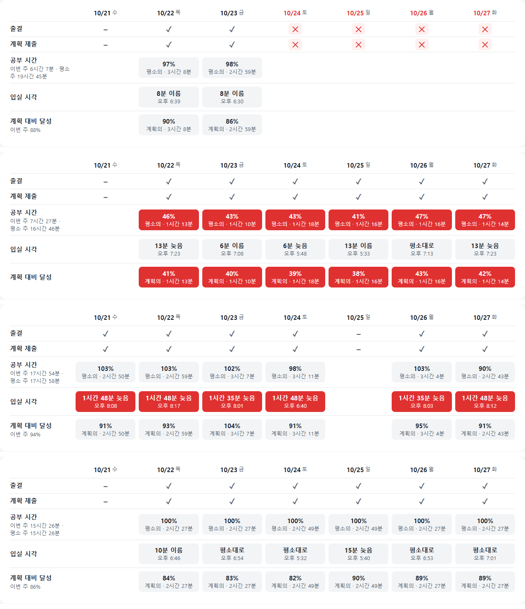

학생 케어 Z · 최근 7일 표기법 비교
학생 상세의 최근 7일에서 지표 4개(출결·계획 제출, 공부 시간, 입실 시각, 계획 대비 달성)마다 표기법을 5개씩, 모두 20개를 구현해 같은 학생 4명으로 찍었다. 큰 표기 틀(막대, 선, 색 칸, 글자, 원형, 아령 등)은 20개 안에서 2번까지만 썼고 점선은 쓰지 않았다. 지표마다 하나를 골라 합친 결과가 맨 아래에 있다.
| 학생 | 최근 7일 특징 | 보려는 것 |
|---|---|---|
| 권유진 | 10/24–10/27 4일 연속 결석, 그날 계획 미제출 | 결석이 이어지는 날이 바로 보이는가 |
| 장수빈 | 매일 출석했지만 공부 시간이 평소의 40%대, 계획 달성 40% 안팎 | "덜 했다"가 바로 보이는가 |
| 권하린 | 매일 평소보다 1시간 35분–1시간 48분 늦게 입실 | "늦게 왔다"가 바로 보이는가 |
| 강도현 | 특이 없음 | 정상인 학생이 조용하게 보이는가 |
출결·계획 제출
날짜마다 상태가 하나(입실·결석·예정 없음·기록 없음 / 제출·미제출)인 범주 자료다.
공부 시간
판단은 "같은 요일 평소보다 얼마나 덜 했나"다. 학생마다 하루 1시간에서 11시간까지 차이가 커서 절대값보다 평소 대비가 맞다.
입실 시각
판단은 "같은 요일 평소보다 얼마나 늦었나"다. 오전·오후 두 무리가 있어 시각 자체보다 차이가 맞다.
계획 대비 달성
판단은 "계획한 시간의 몇 %를 했나"다.
고른 안
출결·계획 제출은 ✓/✕ 기호, 공부 시간·입실 시각·계획 대비 달성은 같은 색 칸 형식("값 + 무엇 대비")이다. 색은 기준을 넘었는지(빨강)와 기준의 절반을 넘었는지(연한 빨강)만 뜻한다. 결석·예정 없음인 날은 위 기호 줄이 말해 주므로 아래 칸을 비웠다.

측정
카드 안 모든 글자 상자(HTML·SVG)를 서로 비교해 겹침을 세었다. 같은 요소 안의 글자 조각끼리는 세지 않았다. 학생 4명 × 1600·1280 폭.
| 화면 | 겹침이 난 표기법 | 1600 폭 | 1280 폭 |
|---|---|---|---|
| 1 | 없음 | 0 · 0 · 0 · 0 | 0 · 0 · 0 · 0 |
| 2 | 입실 2(±분 색 칸): 큰 글자와 작은 글자 줄 간격이 좁음 | 2 · 5 · 6 · 6 | 2 · 5 · 6 · 6 |
| 3 | 입실 3(아령): 이웃 칸 글자와 겹침 | 1 · 5 · 4 · 5 | 1 · 5 · 4 · 5 |
| 4 | 달성 4(세로 아령): 좁은 폭에서 글자 겹침 | 0 · 0 · 0 · 0 | 0 · 4 · 0 · 3 |
| 5 | 공부 5(% 색 칸) 줄 간격, 입실 5(문장) 넘침 | 3 · 5 · 5 · 2 | 3 · 5 · 8 · 2 |
| 고른 안 | 색 칸의 줄 간격을 넓혀 고침 | 0 · 0 · 0 · 0 | 0 · 0 · 0 · 0 |
학생 순서는 권유진 · 장수빈 · 권하린 · 강도현. 잘림(넘친 글자 숨김)은 모든 화면에서 0건이었다.